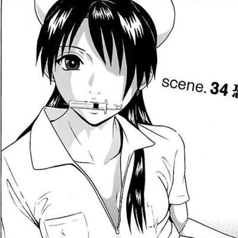

Jahseh
@godspeedyou50
@liyfn130024 研究药理研究在哪 药圈人永远分不清混圈子和做研究是两码事

#dpt不好体验分享
@liyfn130024
永失我爱 永久缅怀
有时感到他也真是可悲啊，这一生，研究那么多的药理，救过人，也干过烂事。混那么久圈，朋友仇人那么多，最后去送完他全部流程的却只有我，和他的父母亲戚烧纸净身火化，只有我一个不混圈，之前玩线下圈子的人来了。
为他感到巨大的悲戚，又无力
小mercy 小猫 晚安 https://t.co/Rn8k2NsTW7